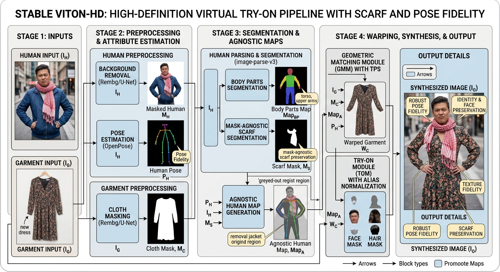

Surveillance System
PHP (Laravel) · Python · OpenCV · MySQL
Camera sensors detect events with image processing and push them to a server through a RESTful API; the server queues events and emails the user for each one.
source code ↗I am an AI/ML engineer and computer vision researcher. My work sits where learned image compression meets image and video quality assessment: designing models that compress visual information, then quantifying what perception loses.
I contributed to the CLIC (Challenge on Learned Image Compression) and NTIRE (New Trends in Image Restoration and Enhancement) challenges, and have co-authored publications on no-reference and compressed-image quality assessment. Alongside research, I have shipped applied ML systems across medical NLP, virtual try-on, automotive 3D reconstruction, and content integrity.
I hold a Master’s degree in Artificial Intelligence from Kharazmi University and a Bachelor’s degree in Computer Engineering from Bu-Ali Sina University.
M.Sc. Artificial Intelligence · 2021 – 2024
Tehran, Iran
B.Sc. Computer Engineering · 2017 – 2021
Hamedan, Iran

PHP (Laravel) · Python · OpenCV · MySQL
Camera sensors detect events with image processing and push them to a server through a RESTful API; the server queues events and emails the user for each one.
source code ↗Python · YOLO · OpenCV
Extract the background from driving footage, detect street lines with the Hough transform, then use YOLO to find and remove white cars from a given lane.
source code ↗Python · PyTorch
Face recognition on Labeled Faces in the Wild using a Siamese architecture and a triplet loss function.
source code ↗Python
Encoder/decoder for MPEG2 video compression: I-frames are block-coded with JPEG; P-frames are coded as residuals and motion vectors after motion estimation.
source code ↗Python · TensorFlow
Sample 20 frames per video and classify fights using features extracted from each frame and fed to a neural network.
source code ↗Python · scikit-learn
Predict the type of car from the coordinates of the bounding box around the car.
source code ↗Python · TensorFlow
Segmentation of flower images using the U-Net architecture.
source code ↗Python · PyTorch
Predict seven classes of facial expression using deep neural networks.
source code ↗Python · PyTorch
Classify images with a Vision Transformer, then reduce the extracted features to two dimensions (t-SNE, PCA) and visualize them.
source code ↗Python · scikit-learn
Cluster embeddings of Persian news sentences with two unsupervised methods and identify the main topic of each cluster.
source code ↗Python · PyTorch
Predict 14 key points on a sports dataset using features extracted from pre-trained ResNet and VGG models.
source code ↗Python
Predict missing sunspot values using 1D convolution and recurrent networks such as GRU and LSTM.
source code ↗Python · PyTorch
Encoder/decoder image captioning: the encoder passes extracted image features to the decoder, which derives the appropriate words.
source code ↗Python
Implement decision tree, Gaussian naive Bayes, random forest, MLP, RBF, and KNN from scratch.
source code ↗Python · scikit-learn
Predict the probability of heart disease from characteristics such as age, sex, maximum heart rate, and cholesterol.
source code ↗Python · PyTorch
Classify ants and bees images with neural networks and transfer learning.
source code ↗Python · TensorFlow
Generate new celebrity-like images with a GAN trained on celebrity images.
source code ↗